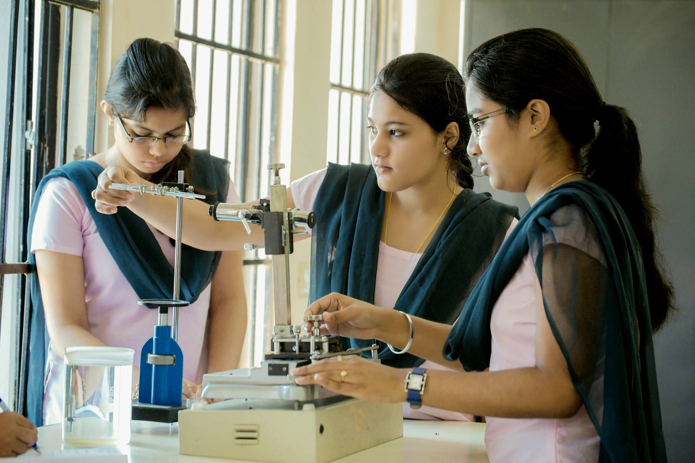
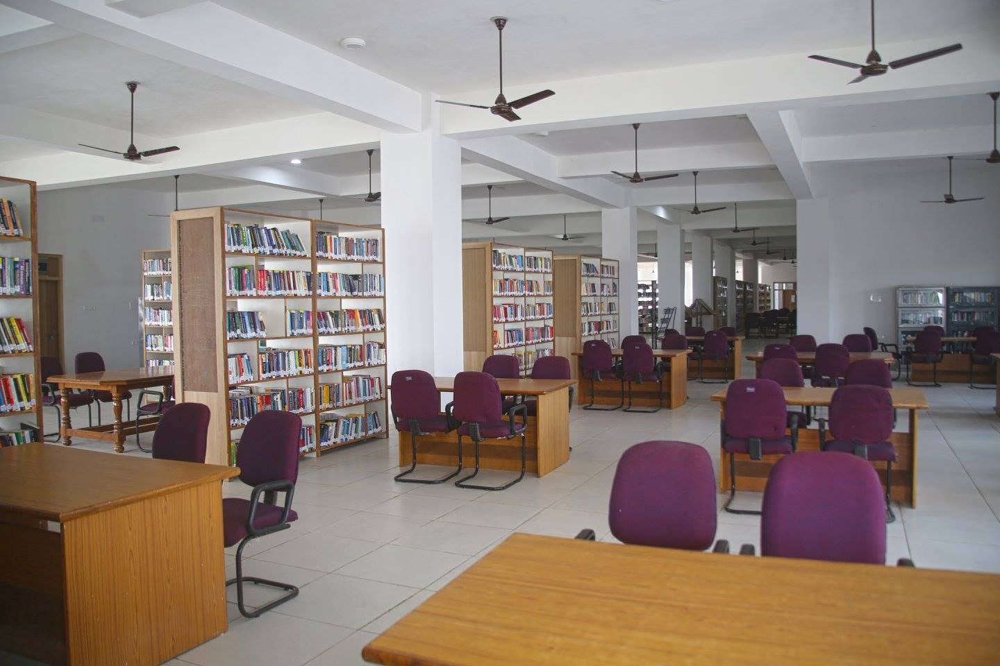
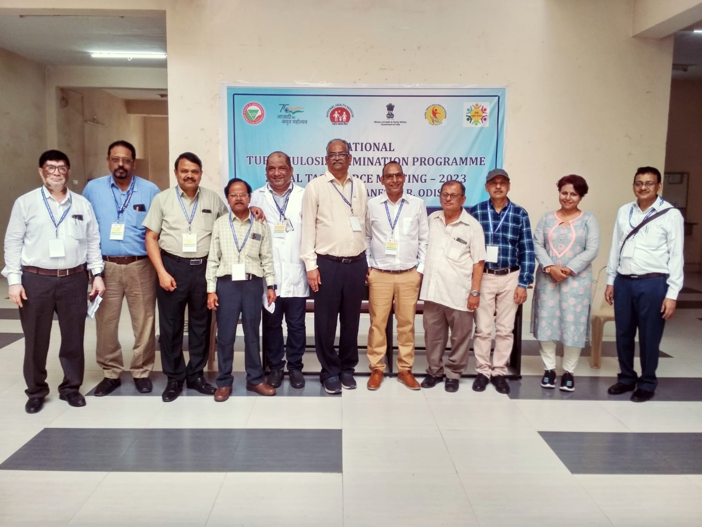

- We’re on your favourite socials!


SOA Bhubaneswar Expert's Review and Verdict
Campus at a Glimpse
Located in Bhubaneswar, Siksha ‘O’ Anusandhan stands as a private deemed university established in 2007. Encompassing an extensive 452-acre campus, its verdant surroundings provide a visually pleasing experience for visitors. The modern infrastructure and meticulously maintained campus immediately capture attention. The university, accredited with a stellar grade of “A++” by NAAC, has swiftly garnered a commendable reputation. Whether evaluating educational standards, teaching methods, or placement records, SOA University consistently proves its excellence.
Currently, the institution caters to the educational needs of over 15,000 students across diverse fields such as law, management, medicine, and engineering. This is achieved through its nine constituent colleges and schools. SOA is committed to fostering a harmonious academic atmosphere that celebrates cultural diversity. Its fundamental goal revolves around preparing future generations through a combination of quality teaching and innovative research, resulting in numerous accolades.
The university takes pride in its faculty, renowned for being the best in their respective fields. They ensure that students hone both theoretical knowledge and practical skills. However, as with any institution, there are areas where Siksha ‘O’ Anusandhan faces challenges that cast a shadow on its positive image. For a candid and comprehensive assessment of this prestigious institution, stay tuned for an in-depth exploration of this college verdict.
SOA University’s NIRF Ranking: A Consistent Upward Graph!
SOA, also known as Siksha 'O' Anusandhan, stands out as one of the fastest-growing educational institutions in Odisha, earning a notable ranking over the years. The NIRF report, spanning the last three years, depicts a journey of significant highs and lows in its position. In the university category, the rank has shown an upward trajectory, advancing from 20 in 2021 to 16 in 2022, and further improving to 15 in 2023.
This success extends across various disciplines, including law, engineering, medical, management, and dental. To delve deeper into the dynamic ranking performance, a detailed breakdown is provided in the table below:
|
Category |
NIRF Rank 2023 |
NIRF Rank 2022 |
NIRF Rank 2021 |
|---|---|---|---|
|
Overall |
26 |
30 |
37 |
|
Universities Category |
15 |
16 |
20 |
|
Engineering |
27 |
27 |
32 |
|
Law |
8 |
9 |
- |
|
Management |
57 |
- |
- |
|
Dental |
9 |
10 |
14 |
|
Medical |
16 |
18 |
21 |
Awards & Recognitions:
- As per QS World University rankings 2023, it secured a rank ranging between 1201 to 1400.
- The varsity bagged the prestigious award of Swachh campus; it ranked 3rd nationally
- As per Asia’s University rankings 2023, SOA was positioned within 301 to 350
Our Take:
Comprehensive Evaluation Overview:
- Overall Standing: SOA University has exhibited a commendable ascent, progressing from the 37th spot in 2021 to an impressive 26th position in 2023, marking a substantial improvement.
- University Ranking: The university has witnessed a substantial leap from the 20th position in 2021 to a notable 15th position in 2023, signifying a remarkable advancement.
- Engineering Discipline: The engineering department experienced a positive shift, moving from the 32nd position in 2021 to the 27th position in 2023, consistently maintaining its status among the top 50 engineering colleges in India.
- Law and Dental Disciplines: These disciplines have consistently held positions within the top 10 rankings since 2022, showcasing sustained excellence.
- Medicine Discipline: Noteworthy progress has been observed in the medicine domain, with rankings ascending from the 21st position in 2021 to the 16th position in 2023.
- Management Discipline: The university has secured a position among the top 100 management institutions in India, attaining a respectable rank of 57 in 2023. This underscores its continuous dedication to academic excellence.
SOA University’s Academia & Batch
Spreading its branches across 15 countries through 9 constituent colleges and schools, SOA University is nurturing young minds with the power of innovation-based education. It has been attracting students aspiring to continue their higher education in disciplines like engineering, law, pharmaceutical sciences, agricultural sciences, management, dental sciences, and medical sciences among others at UG, PG, and doctoral levels. NBA has accredited its five engineering programs whereas three disciplines have received approval from ABET USA. As per university data, around 15,000 students have been enrolled in different disciplines. Admissions are conducted via the last exam marks and the Siksha 'O' Anusandhan Admission Test, also known as SAAT.

Academia
The faculty at SOA University receive consistent praise for their expertise, knowledge, and approachability, with some commendations highlighting their valuable industry connections. The curriculum is acknowledged for being contemporary and tailored to industry demands, emphasizing practical application. Regular updates to the curriculum are noted in reviews, ensuring its relevance. The infrastructure is lauded for its modernity, featuring well-equipped classrooms, labs, libraries, and other essential facilities.
The institution fosters an active research environment, providing students with access to labs and opportunities for engagement in projects. However, some reviews have also emerged regarding teaching methods, with a few reviews expressing concerns about a traditional lecture-based approach lacking interactivity and personalized attention. In certain programs, particularly engineering, large class sizes raise apprehensions about individual attention and effective learning. Limited faculty-student interaction is reported, as some students feel disconnected due to the challenges posed by large class sizes and limited opportunities for interaction outside of lectures.
Programs Offered
To help the aspirants generate a fair idea regarding the budget they might require for admission, SOA University courses with their tuition fees have been given below:
|
Academic Programs |
Tuition Fees in INR |
|---|---|
|
BE/B.Tech |
5 to 10 LPA |
|
B.Pharma |
6.6 LPA |
|
BA LLB(Hons) |
6.3 LPA |
|
MBA/PGDM |
2 to 7.5 LPA |
|
B.Sc |
2.7 to 7.2 LPA |
|
BBA |
3 to 7.5 LPA |
|
BCA |
3.3 LPA |
|
BDS |
22 LPA |
|
MCA |
3.3 LPA |
|
MBBS |
88.2 LPA |
|
LLB |
2.9 LPA |
|
MD |
12 to 50 LPA |
|
DM |
27.7 LPA |
|
M.Ch |
27.7 LPA |
|
BBA LLB |
6.3 LPA |
|
ME/M.Tech |
3 LPA |
|
M.Pharma |
3.3 LPA |
|
M.Sc |
2 to 5 LPA |
|
BHMCT |
3.6 LPA |
Batch Size
There is considerable variation in batch sizes among programs at SOA University, with engineering typically having a larger batch size compared to disciplines such as law or medicine. The divergence in batch sizes raises legitimate concerns regarding personalized attention, the effectiveness of learning, and the quality of faculty-student interaction. Large batches may pose challenges in maintaining an optimal learning environment. However, on a positive note, smaller batches in specific programs are perceived as advantageous, promoting enhanced learning experiences and more meaningful interactions between students and faculty. This diversity in batch sizes sparks both apprehensions and recognition of potential benefits, reflecting the nuanced landscape of academic dynamics within the institution.
Our Take:
SOA University presents an overall favourable academic environment, showcasing notable strengths in faculty proficiency, curriculum pertinence, well-developed infrastructure, and ample research prospects. Nevertheless, apprehensions arise in programs characterized by substantial batch sizes, potentially compromising individualized attention and the efficacy of the learning experience. We also advise students to delve into program-specific details and peruse student reviews for a comprehensive understanding of the university's dynamics.
SOA University’s Infrastructure
Siksha 'O' Anusandhan, Bhubaneswar has a sprawling campus equipped with top-notch facilities that certainly offer comfort to the learners. For a better understanding let’s delve deeper into the various components like lab, library, classroom, and accommodation among others.
Library
The university houses a spacious centralized library equipped with an extensive range of resources. Students can discover books, journals, magazines, and online resources based on their field of study. It is connected to top libraries to enable students to gain access to resources.

Classrooms
The classrooms are pretty spacious and are designed to offer complete comfort to the students. Each of the rooms has a swift internet connection and is air-conditioned. To ensure students get better exposure through workshops or seminars, audio-visual systems are installed in the classrooms.
Hostel
The varsity has separate hostels for boys and girls with adequate facilities. It has spacious rooms accommodating up to 4 students per room. The rooms comprise ACs, a kitchen, a common room, and other necessities. Find the hostel charges below:
|
Hostel Fee |
INR 36,000 per annum |
|---|---|
|
Hostel boarding charges |
INR 48,000 per annum |
|
One-time caution deposit |
INR 5,000 per annum |
IT Infrastructure
The university impresses students with its modern and technically enabled infrastructure. The labs keep updating systems with the latest software as well as hardware so that students can get adequate practical exposure.
Cafeteria
It is perhaps the most lively and entertaining place on the entire campus. The cafeteria served delicious meals and beverages at affordable rates to both students and university staff. Hygiene is taken care of when preparing food.
Moot Court
Students enrolled in legal studies discipline can practice advocacy and empower negotiation skills at the moot court. The hall has been facilitated with the necessary technical requirements. State and national-level moot court competitions are held here to offer better exposure to learners.
Gym
The varsity houses a well-maintained fitness centre. The gym is equipped with the latest and modern equipment that enables students to take care of their physical well-being.
Our Take:
The facilities offered at SOA University are extensive, featuring state-of-the-art classrooms, technologically advanced labs, a well-stocked library, an auditorium, a sports complex, and medical services. For student accommodations, the university provides separate hostels for boys and girls equipped with Wi-Fi, recreational amenities, and mess services. The IT infrastructure of SOA University is commendable, offering high-speed Wi-Fi across the campus, computer labs with updated software, and access to e-learning resources. Security is a priority, with 24/7 surveillance through CCTV and dedicated personnel.
However, the campus's distance from the city centre, situated on the outskirts of Bhubaneswar, may pose some inconvenience for certain students. Additionally, while sports facilities are available, there are mentions in reviews about the limited diversity of recreational options. Some students express concerns about the quality and variety of food provided in the hostels, revealing aspects that warrant consideration when evaluating the overall student experience.
Upon careful examination, it becomes evident that SOA University holds a superior position in terms of infrastructure when compared to other universities in Bhubaneswar. Noteworthy for its contemporary facilities, abundant resources, and committed academic infrastructure, SOA stands out in this aspect. Nevertheless, students need to acknowledge that universities such as KIIT University and XIMB present a competitive edge by not only offering comparable infrastructure but also providing additional amenities like shopping malls and entertainment facilities within their campus premises. This underscores the multifaceted considerations one must weigh when evaluating the overall appeal of these institutions.
SOA University’s Internships & Placements
Siksha 'O' Anusandhan(SOA) provides placement opportunities to students across various streams of MBA, pharmacy, medical, and others. Pre-placement training programs are initiated to educate students about employability skills so that the path to a fulfilling career becomes smooth. During the session, the main focus lies on developing the cognitive, behavioural, and emotional aspects of a student’s personality. The university prepares students to sharpen decision-making and problem-solving skills which turns out to be crucial in any job role.
Internships
The training and placement cell at the varsity offers internship opportunities to the meritorious and talented pool of learners. Before internships, students are educated on industry-specific skills during the pre-final years of various academic programs.
Placement
The university has completed placement drives for the 2022-23 session. According to the placement data, top recruiters like Accenture, Adani, EY, Amazon, etc conducted recruitment drives. A slight hike was observed in the total recruiter participation which was 157 in 2021 and rose to 164 in 2022. Out of 1.47k graduates across various disciplines, 1.30k bagged job offers which make the placement percentage at 94.19%. As per student reviews, SOA University has higher rates of placement in some specific streams including B.Tech CSE, MBA, pharmacy, etc.
SOA University Placement Statistics:
- There has been a significant hike of 35% in the highest packages offered in 2022 compared to the previous year
- A 4% increase in recruiter participation was registered in 2022
- Average salary remained stagnant at 5 to 6.5 LPA
- In the 2022 recruitment drive, the highest package stood at INR 42 LPA
|
Academic programs |
Median Package |
|---|---|
|
UG-3 years |
INR 3.25 LPA |
|
UG 4 years |
INR 4.5 LPA |
|
UG 5 years |
INR 8.5 LPA |
|
PG 2 years |
INR 4.8 LPA |
Our Take:
Though the university takes pride in effectively working towards helping students bag the best job offers through pre-placement training, however, the stats present an unsatisfactory scenario. According to the placement data and student reviews, it was observed that disparity exists in terms of placement packages and rate of placement based on courses. The packages are pretty average compared to market rates.
SOA University’s Diversity & Gender Representation
SOA University claims to promote cultural diversity by helping students across the globe to join their prestigious institution. Since its inception, the varsity and its constituent colleges with a total strength of 15,000 students strive to create a harmonious campus environment where learners from different ethnicities, cultures, and gender fulfil their academic dreams without facing any sort of discrimination or prejudice. As per the data collected from the university website, the varsity has succeeded in striking a perfect balance between the male and female ratio however data represented a different picture. The gender ratio at SOA is 44: 56; inadequacy exists in the male and female participation.
Highlights on gender ratio and diversification across various streams at SOA:
|
Course Type |
Male |
Female |
|---|---|---|
|
UG-3years |
76 (47%) |
85 (53%) |
|
UG-4years |
3563 (44%) |
4496 (56%) |
|
UG-5 years |
573 (43%) |
763 (57%) |
|
PG 2 years |
226 (46%) |
268 (54%) |
Student diversification at SOA University:
|
Course Type |
Within State |
Outside State |
|---|---|---|
|
UG-3years |
40 |
121 |
|
UG-4years |
1413 |
6564 |
|
UG-5 years |
274 |
1059 |
|
PG 2 years |
110 |
380 |
Our Take:
Gender Diversity at Siksha ‘O’ Anusandhan presents conflicting narratives. Online reviews depict a perceived female-dominated student body, but we also felt a lack of official university data that might add ambiguity to this aspect, emphasizing the need for reliable information. Several challenges compound the situation. Furthermore, we observed that specific initiatives or programs fostering diversity and inclusion lack detailed documentation as compared with other universities in the same region or city. While some private universities in India actively promote gender diversity and inclusivity through scholarships, targeted outreach programs, and initiatives for creating inclusive environments, determining where SOA stands in this landscape remains inconclusive due to data limitations from SOA University's side.
SOA University’s Faculty/ College Administration & Management
SOA University is gaining prominence as a prominent educational institute known for imparting quality education through a team of 1317 vibrant, experienced, and qualified teaching staff. As per the varsity, faculty members are all PhD holders and have research papers published in top journals. They inculcate a robust teaching pedagogy that combines theoretical concepts and a practical approach to help learners evolve in their respective fields.

As claimed by the varsity, the institute is admitted by the board of management headed by the vice-chancellor. To ensure the learners enjoy learning in a safe, secure, and encouraging environment, a student grievance redressal committee has been formed to listen and address issues faced by students.
Our Take:
In the realm of positive feedback, the faculty at SOA University receives commendation for their impressive qualifications, knowledge, and approachability. Reviews consistently use phrases like "well-educated," "experienced," and "approachable" to describe the faculty members. The teaching methodologies employed here also earn praise, with a focus on diverse styles, the integration of technology, and a curriculum that aligns with industry standards. The environment is lauded for being supportive, with students expressing gratitude for the clear communication and willingness of both faculty and staff to assist.
On the flip side, negative reviews highlight concerns about limited interaction outside the classroom and the availability of faculty. Some programs are reported to have larger class sizes, potentially affecting the level of personalized attention students receive. Occasional grievances surface regarding administrative processes and bureaucratic hurdles.
When compared to established universities in Bhubaneswar, the faculty credentials at SOA University are noted to be on par, showcasing strong academic qualifications. While some reviews touch upon the positive aspects of infrastructure, a more detailed comparison with established universities is necessary for a comprehensive understanding. Additionally, given its relatively young age, SOA's reputation and ranking might be influenced when measured against its well-established counterparts in the academic landscape.
SOA University’s Location
The university is situated at J-15, Khandagiri Marg, Dharam Vihar, Jagamara, Bhubaneswar. The location is pretty convenient for the students traveling from the main city to campus. Lingaraj Temple Road Railways station is the nearest one which is around 4km away from campus. Students traveling via bus can take a bus from the Mo bus depot situated 3 km away from SOA University.
Our Take:
Pros:
- Accessibility: SOA University campus boasts excellent connectivity to the city centre through public transportation and taxis.
- Urban Environment: Bhubaneswar provides a rich tapestry of cultural experiences, entertainment options, and shopping opportunities. Particularly appealing for students desiring a dynamic lifestyle beyond the confines of the campus.
- Proximity to Other Educational Institutions: The strategic location facilitates convenient access to libraries, research institutions, and other universities. This geographical advantage holds the potential to foster collaboration and enhance learning opportunities.
- Developments: The city is experiencing rapid development, presenting promising internship and career prospects across various sectors.
Cons:
- Distance from City Attractions: Centrally located but potentially longer travel times to historical sites and tourist attractions.
- Traffic Congestion: Bhubaneswar, like many Indian cities, faces traffic congestion, impacting travel time and potentially causing stress.
- Limited Green Spaces: Urban environments may lack extensive natural spaces, posing a challenge for those seeking a serene atmosphere.
SOA University’s Expectation vs Reality: CollegeDekho Verdict
Choosing a university is a significant decision, and Siksha ‘O’ Anusandhan (SOA) University appears promising. However, it's important to assess whether the reality aligns with the expectations it sets. Firstly, regarding faculty quality and course relevance, while reviews commend the faculty's qualifications, some students note limited interaction and large class sizes. Additionally, although course content appears relevant, certain programs may require more industry-specific updates. Concerning infrastructure and campus life, both campuses boast decent facilities, yet there's room for improvement in areas like hostel amenities. Opinions vary on the vibrancy of campus life. Regarding placements and career support, while placement records show positive outcomes for some, concerns exist regarding equal opportunities across branches and limited support for specific career paths. In terms of diversity and inclusivity, despite the university's claims, student reviews suggest limited diversity, particularly in certain programs, necessitating more efforts to foster a truly inclusive environment.
Final Verdict: Selecting SOA University for your higher studies can be a rewarding choice, yet it's essential to approach it with realistic expectations. The university prides itself on a competent faculty and solid infrastructure; however, there are areas requiring enhancement such as faculty-student engagement, career guidance, and fostering diversity. It is advised to thoroughly review and analyse the particulars of your chosen program, take into account the experiences of current students, and assess SOA University in comparison to alternative university and institute options. By doing so, you can make a well-informed decision that aligns with your academic and career aspirations.
Final Review CheckBox!
|
Yay! |
Nay! |
|---|---|
|
Renowned Faculty |
Limited Faculty-Student Interaction |
|
Industry-aligned Curriculum |
Potential Inconsistency in Infrastructure |
|
Modern Infrastructure and Facilities |
Varying Placement Success |
|
Diverse Course Offerings |
Traffic Congestion in City |
|
Supportive Campus Environment |
Distance from City Attractions |
|
Vibrant Campus Life |
Limited Green Spaces |
|
Encouraging Research Culture |
Large Class Sizes |
|
Strong Alumni Network |
Occasional Administrative Processes Complaints |
|
Focus on Innovation and Entrepreneurship |
- |
What students says about SOA Bhubaneswar
- Good teachers
- Fine overall ranking
- Students can get admission on the basis of JEE rankings
- Admission process is well and good
- No reservations
- No improvement
- Application form can only be obtained from the college
Note: Insights gathered through various sources across internet like student reviews, ratings, student testimonials etc
SOA Bhubaneswar Reviews and Rating
Why to choose SOA Bhubaneswar?

4.3
(45 Verified Reviews)
Share your college experience
Earn unlimited cash rewards  Earn up to ₹10 for every approved college review. Refer your friends to write reviews and earn ₹10 for each of their approved reviews too.
Earn up to ₹10 for every approved college review. Refer your friends to write reviews and earn ₹10 for each of their approved reviews too.

Student Feedback and Rating on SOA Bhubaneswar
Enrollment : 2021 | Oct 18, 2025
Overall Rating of the University
Overall With its focus on academic quality, technical exposure, and overall student development, this institute has made a name for itself.. There are several different undergraduate and graduate courses available at the college.
Placement Placements have shown consistent improvement, as reputable companies such as TCS, Cognizant, Accenture,, Capgemini, and Infosys actively recruit students, particularly from the CSE, IT, and ECE disciplines.
Infrastructure Wi-Fi is available on campus, and the well-maintained seminar rooms,, large lecture halls, and smart classrooms all contribute to an engaging learning environment. One of the main attractions is the central library
Faculty As a result of the supportive, knowledgeable, and approachable faculty, the learning environment is conducive for students.. There is also a strong emphasis on research and project-based learning at the institute.
Hostel There are separate dormitories with sanitary dining areas and adequate security for males and girls.. With great access to transportation and environmentally favorable surroundings
Enrollment : 2025 | Sep 09, 2025
A comprehensive review
Overall The university has quickly emerged as a promising institution in higher education. Known for its modern infrastructure and industry-aligned courses, the university offers a diverse range of programs
Placement In terms of placement, the university maintains decent records, especially in IT, management, and core engineering domains, with top recruiters like TCS, Cognizant, and Wipro visiting the campus.
Infrastructure Spread over a sprawling green campus, the university boasts state-of-the-art infrastructure, including smart classrooms, well-equipped laboratories, and an expansive library with digital access to journals and e-books.
Faculty Faculty members are generally qualified and supportive, with many having industry and research experience hands-on learning and skill development, often organizing workshops,
Hostel The hostel is designed to provide a safe, comfortable, and conducive environment for academic and personal growth. There are separate hostels for boys and girls
Enrollment : 2024 | Aug 29, 2025
A comprehensive review
Overall SOA University located in Bhubaneswar as quickly emerged as a promising institution in higher education known for its moral infrastructure including industry align courses
Placement In terms of placement the university maintains decent records especially in it management and cool engineering domain with operators like Tcs Wipro visiting the campus
Infrastructure Stared over a sparrowing green campus the university board stated the arc Smart classroom oil equipped laboratories and an expensive library with digital access to journals and ebooks
Faculty Faculty members are generally qualified and supportive with many having industry and research experience hands on learning and exclusive government often organising workshops internships and seminars
Hostel The hostel is designed to provide a safe affordable and conductive milk environment for academic and personal growth and girls each supervised by warns to ensure discipline and security
Enrollment : 2027 | Mar 15, 2025
Institute of Agricultural Sciences (IAS), SOA – A Premier Hub for Agricultural Education
Overall The Institute of Agricultural Sciences (IAS) at Siksha 'O' Anusandhan (SOA), Bhubaneswar, is a well-regarded institution for students aspiring to build a career in agriculture. With a well-structured curriculum, experienced faculty, and strong research facilities, it provides a solid foundation in agricultural sciences. The institute offers B.Sc. Agriculture and postgraduate programs, blending theoretical knowledge with hands-on practical training. Students benefit from well-equipped labs, experimental farms, and industry exposure, preparing them for real-world challenges. While the faculty support and academic environment are widely appreciated, some students feel there is room for improvement in infrastructure and extracurricular activities. That said, placement opportunities and overall career guidance make it a great choice for those passionate about agriculture. A strong institution for agricultural education with good industry exposure, practical learning, and faculty support—ideal for students looking to make a mark in the field.
Placement Ok ok not that much scopePlacement Review – Institute of Agricultural Sciences (IAS), SOA The Institute of Agricultural Sciences (IAS), SOA, Bhubaneswar, has a dedicated placement cell that assists students in securing jobs, internships, and research opportunities in the agriculture and allied sectors. The placement record is decent, with graduates finding opportunities in agribusiness companies, seed and fertilizer industries, agro-tech firms, government agencies, and research institutions. Several renowned agricultural companies, banks, and research organizations visit the campus for placements, offering roles in farm management, agri-marketing, soil analysis, quality control, and research & development. ICAR, NABARD, agrochemical companies, and agribusiness startups are among the key recruiters. Some students also clear government exams like ICAR, FCI, and state agricultural services, for which the institute provides guidance. Internship opportunities are available in agro-based industries, research labs, and agricultural startups, helping students gain hands-on experience. However, students feel that higher placement rates, better salary packages, and more diverse job roles could further improve the placement scenario. IAS-SOA provides moderate placement support, with opportunities in the agriculture, agribusiness, and research sectors. More industry tie-ups, higher salary packages, and expanded job roles could enhance career prospects for students.
Infrastructure The Institute of Agricultural Sciences (IAS), SOA, Bhubaneswar, boasts a well-developed infrastructure designed to support both academic and practical learning in agriculture. The campus is spacious and well-maintained, featuring modern classrooms, fully equipped laboratories, and a rich library stocked with books, journals, and research materials. One of the standout features of the institute is its extensive experimental farms and research fields, where students get hands-on training in crop cultivation, soil analysis, and advanced agricultural techniques. Additionally, greenhouse and polyhouse facilities provide exposure to controlled-environment farming, enhancing students' practical knowledge. The hostels offer decent accommodation with necessary amenities, though some students feel improvements in maintenance, sanitation, and recreational spaces would enhance the overall experience. The cafeteria provides hygienic food, and the campus environment is peaceful and conducive to learning. However, better sports and leisure facilities could further enrich student life. IAS-SOA offers a well-structured learning environment with strong research and agricultural training facilities. While its infrastructure is impressive, enhancements in hostel management and recreational areas could make the student experience even better.
Faculty Faculty Review – Institute of Agricultural Sciences (IAS), SOA The faculty at IAS-SOA, Bhubaneswar, is a major strength of the institution, known for their strong academic background, research expertise, and student-centric approach. Most professors hold Ph.D. or M.Sc. degrees and bring years of teaching, research, and field experience to the classroom. Their deep knowledge of agricultural sciences helps students build a strong foundation in both theoretical concepts and practical applications. Faculty members are highly supportive and approachable, often encouraging students to participate in research projects, hands-on training, and internships to bridge the gap between academics and real-world applications. The curriculum is designed with a balance of lectures, laboratory work, and field visits, ensuring students gain practical exposure to modern farming techniques, soil science, agribusiness, and sustainable agriculture. In addition, the institute regularly invites industry experts, scientists, and agricultural professionals for guest lectures, workshops, and seminars, providing students with insights into the latest trends in the agricultural sector. The faculty also actively engages in ongoing research projects, giving students opportunities to collaborate and contribute to advancements in agriculture. However, some students feel that certain subjects require a more interactive teaching approach, and the student-faculty ratio could be improved to provide more personalized guidance. While most professors are dedicated and knowledgeable, a few areas could benefit from better faculty accessibility outside class hours and more hands-on learning opportunities. Verdict: The faculty at IAS-SOA is highly qualified, research-driven, and committed to student success. Improvements in interactive learning methods, student engagement, and faculty availability could further enhance the overall academic experience.
Hostel It's over all good cleaning and all are suited Except the in and out time Institute of Agricultural Sciences (IAS), SOA The hostels at IAS-SOA, Bhubaneswar, provide decent accommodation for students, with essential amenities to ensure a comfortable stay. The rooms are generally spacious and well-ventilated, available in single, double, and shared occupancy options. Each hostel has basic furniture, including beds, study tables, and storage facilities, catering to students' daily needs. The hostel mess serves hygienic and nutritious food, though some students feel that menu variety and taste could be improved. The dining facilities are well-maintained, and the staff ensures cleanliness. Additionally, there are common rooms, Wi-Fi connectivity, and reading areas to support academic activities and relaxation. Security is a priority, with 24/7 surveillance, wardens, and entry restrictions, ensuring student safety. The hostel premises are kept clean, but some students have mentioned that maintenance and sanitation in certain blocks need improve
Enrollment : 2026 | Jan 27, 2025
Must study
Overall I am doing bca, based on every prospect,this is the best. From faculty to study environment are all well settled. Everyone who wants to purse any degree can come over here.
Enrollment : 2028 | Dec 03, 2024
Comprehensive review of Siksha 'O' Anusandhan(SOA)
Overall Siksha 'O' Anusandhan is a deemed to be university which contains various educational programs of engineering, medicine, law, business management, pharmacy and many more. Being from an engineering field of CSE core branch i can give brief about Institute of Technical Education Research(ITER) college. Starting with the faculty of this college, some are extremely helpful and they will even guide you for future , the study environment of this college is not that stressful because of which student can get more time to develop skills , coming to placement ,college gives training to all the 3rd year students for placement with an extra specialization with core which helps students of this college to gather more knowledge in the field of technology. The college is offering quite good package where the highest package touches 42LPA, the average package is around 5-7LPA and then the college also contains several clubs for skill development like coding , robotic clubs and extra curricular clubs such as singing , modelling , dancing ,poetry and many more .The next is about hostel - all the hostels rooms are 4bedded with A/C and non A/C depending on one's own choice and coming to food they are eatable and the mess menu has 4 menu list which means it repeats in every 1 month. Campus life is not that fascinating but with good friends surviving becomes easier and better.
Placement This college starts your placement preparation from the third year of your college life, conducting ppt classes sidewise with your academic courses. The schedule becomes hectic but with that very well reputed companies start coming for recruiting. The college has some placement policies too which needs to be followed to sit for the placement. The highest package offered was 42LPA and the the average package varies between 5-7LPA.
Infrastructure The university includes advanced laboratory facilities with all the systems working properly, A/C classrooms , smartboards and an extremely well maintained central library containing five floors and one of them is computer centered for the students to advance there skill , even the sports complex is maintained well for different indoor games.
Faculty The faculty of this college are well experienced and they also have a prestigious qualification from reputed colleges. Some faculty are extremely supportive and they will guide you throughout your college life, faculty here even help with your academics if needed after class. Not just theoretical practices they try to build your logics and manners from the very first year and prepare you for the upcoming challenges.
Hostel This college contains 12 Boys Hostel and 4 Girls Hostel and all the rooms are 4 bedded with a wooden half covered racks, one shoe rack and one table to each one . All the rooms contain 2 lights and 2 fans on each side of bed. One can choose room according to the requirement of A/C or non A/C. The mess food is quite eatable , sometimes they make decent food and sometimes its miserable but with good mates even the worst food feels less miserable. The worst thing about hostel is that the Ladies Hostel Gate closed at 7.30pm which leads a lot problem to receive food or parcel delivery otherwise hostel life is quite good.
Enrollment : 2026 | Jun 08, 2024
SOA ITER is now a top choice for engineering
Overall SOA ITER has been gaining popularity now. It is ranked highly on the top engineering colleges ranking. It has already beat some of it's contemporary colleges in terms of ranking and placement stats. The seats in computer science engineering have also increased significantly seeing the demand. The facilities provided here are top notch.
Placement The placement cell is responsible for campus recruitment. Top companies like Microsoft, Infosys, TCS, Tech mahindra visit the campus to hire fresh talent. The average package is around 620000 INR per annum. The highest package is said to be around 4200000 INR per annum. Every year there is a campus recruitment drive conducted in the auditorium.
Infrastructure The college campus has a central library situated at the centre of the campus. There are multiple academic buildings along with an auditorium. The main SOA office is outside the college campus within a 1km distance. A newly built sports complex is added to the campus which has badminton courts, table tennis, Foosball, and other indoor games.
Faculty Most of the faculty members are lecturers with many years of teaching experience. Each faculty has a chamber to which the students are allowed to visit in order to solve any queries. They focus on conceptual learning and doubt clearance. SOA is known for having abundant research opportunities and the faculties reflect the same.
Hostel The ITER hostel rooms are of good quality. Currently the campus has 12 Boys hostels and 5 Girls hostels. There are new hostels being built. Each room is shared by around 3-4 people on average. Mess food is of decent quality. The price of hostel stay is around 130000 INR per year including mess fees
Enrollment : 2019 | Apr 17, 2024
Overall view towards college
Overall It has modern infrastructure, well-equipped laboratories, libraries, and other facilities to support academic. The university aims to provide quality education and foster research and innovation among its students.
Placement Placement is good and almost student are placed seniors and teachers according placement is good but according to me placement is average and i hope teachers provide me appropriate knowledge hence I can get good placement
Infrastructure The university has a big campus in terms of size, but most of it is plain fields, and the infrastructure of the colleges is also good. college provied all the basic amenties which required students.
Faculty faculty members of the college are sometimes helpful and sometimes they are not. They are well qualified and knowledgeable and their teaching quality is good and easy to understand.
Hostel The Hostel facility is too good; it doesnt feel like a Hostel. Everyone is friendly, and the environment is also amazing. You will be sharing a room with a classmate in one of the residence halls while learning from all around the world. You could come in to a residential programme that helps you make the most of every University moment.
Enrollment : 2016 | Apr 13, 2024
Siksha 'O' Anusandhan University, Bhubaneswar
Overall This college is the one of the best college for your future if you are looking for your bright career than you can come to this college and made your life and your dreams come true. This is a perfect place for making your future
Placement If you are studied from this college then definitely you will get the best placement and you feel blessed that you studied in this college. Every student get good placement in well reputated and renowned companies.
Infrastructure They provides you the best infrastructure where you can study peacefully and give you the best environment and faculties.Here the best material for study provided by the college
Faculty All colleges are known by their faculties and faculties of this college is fantastic they provide you everything that you need and best for your study . Best teachers,best study material and all.
Hostel Hostel faculty is also very superior.Here is good environment for studies and you can concentrate on your studies and food facilities is also good .Here you learn self reliance and responsibilities.Students do their own work without anyone's help.
Enrollment : 2022 | Apr 09, 2024
Siksha 'O' Anusandhan University, Bhubaneswar
Overall Siksha O Anusandhan university is good with limited seats. The infrastructure of this university is good. The faculty of this institute is good. The placement of this university is satisfied.
Placement The placement of this university is good. Maximum student got their placement in well known company. The average salary package offered to their student is good.
Infrastructure The infrastructure of this university is good. There is smart classes available. There is computer lab in update version. There is library well organised. There is cafeteria with good food.
Faculty The faculty of this university is good. They are experienced and professional. Their way of teaching is easy and unique. They are helpful friendly in nature.
Hostel The hostel of this university is good. The food of this hostel is not bad. The staff of this hostel is helpful. The environment of this hostel is safe.